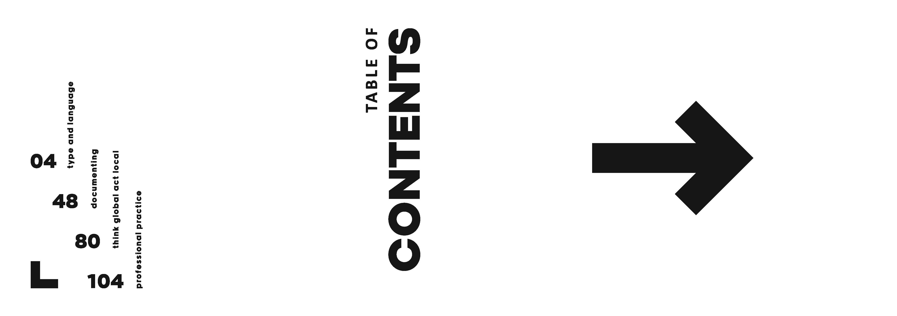

With extensive proficiency in digital design, Apple Mac, and Adobe Creative Suite,
I bring a wealth of technical skills and creative expertise to the table. My deep
understanding of page composition and layout ensures that every project I undertake
is not only visually appealing but also functionally effective and suitable for print.
By leveraging advanced tools and techniques, I can help your company produce high-quality,
professional designs that stand out in a competitive market, ultimately enhancing brand
presence and customer engagement.

Page layout examples from one of my Semester Journals during my degree. I decided to make it into a flag book, which presented challenges in page size and shape and the subsequent space I had for the content itself. As part of the journal, I included the graphic elements used for continuity throughout the book; fonts, colour scheme and grids.

More layout examples from another Semester Journal, this time each page being a double spread. This book was scaled much larger and allowed for me to play with negative space and the edges of the pages a lot more than the previous flag book.

Based on the popular game ‘Minecraft’ and filled with the code for one of the well-used mods made by the users named ‘Worldedit’, this book was a passion project with big ambition for the binding. I designed each page as a square, thematic with Minecraft’s use of blocks and cubes, and bound each chapter in the net of a cube-shaped cover. The font choice was obvious, as it is the exact same pixel font that features throughout the game and its many promotional material.
Billie Eilish - Lyric Book
A short zine consisting of a mix of digital and analogue typography of Billie Eilish' lyrics to 'Bury a Friend.' The design choices used were intended to capture the creepy, grungy tone of the song as if the words were cutting through that negative space.